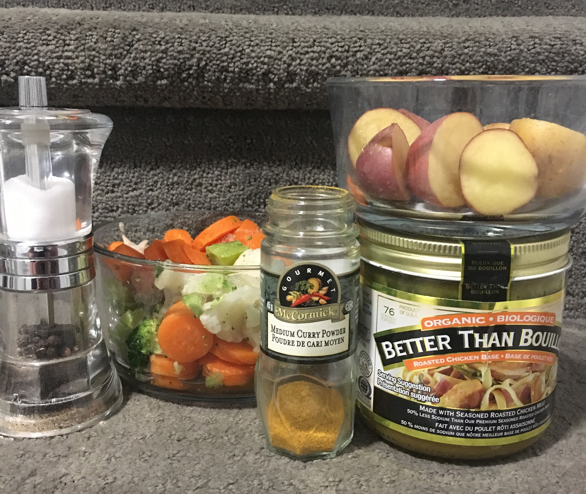
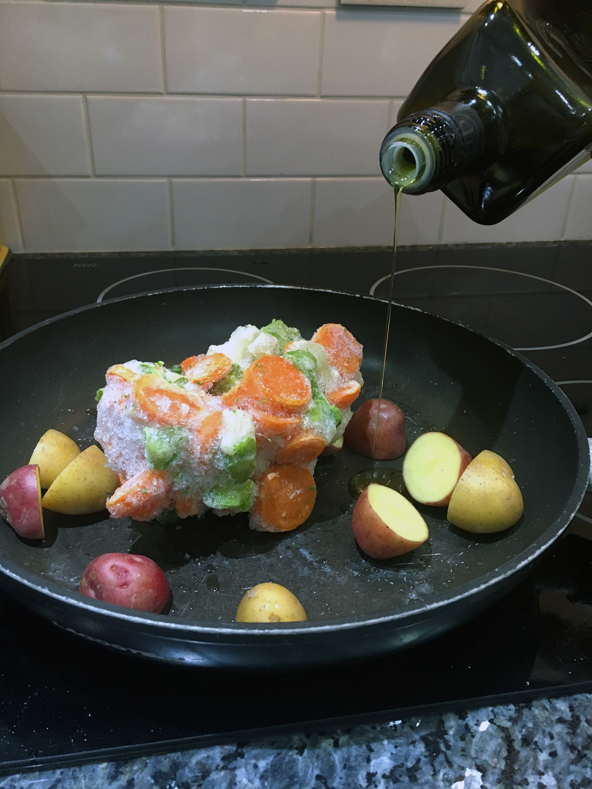

This vegetarian dish is packed with an abundance of flavors that will make your taste buds go Wow. All this creates a healthy variation to student’s diet.
Things You Need

- 4 Cups mixed frozen vegetable
- 2 Whole potatoes
- 1 Tbsp. curry powder
- 1 Cup chicken broth
- 2 Tbsp. vegetable oil
- Salt and pepper to taste
You can always substitute the frozen for fresh in season vegetables
Step 1
Heat oil in pan to medium
Step 2
Add frozen vegetables and cook until defrosted
Step 3
Peel and dice potatoes and add to pan.
Step 4
Add curry powder and mix thoroughly
Step 5
Add chicken broth and simmer for 15 minutes or until potatoes are cooked
Step 6
Season with salt and pepper
Step 7
Serve in bowl, fini.